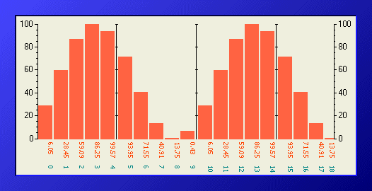

The Bargraph control displays an array of numeric values as a histogram.
It has the following features in addition to those available on all Studio controls:
The KineticaRT Studio Bargraph should be connected to channels containing values of type KineticaRT.Values.DoubleArray.